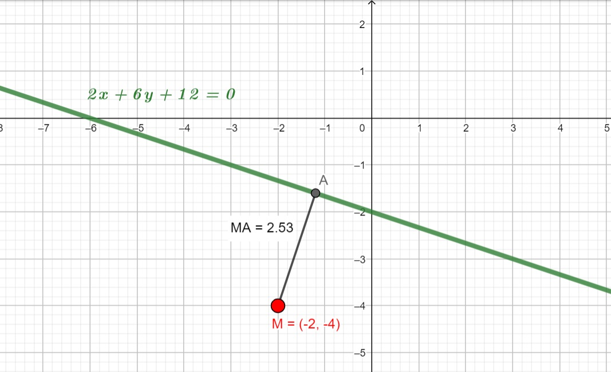
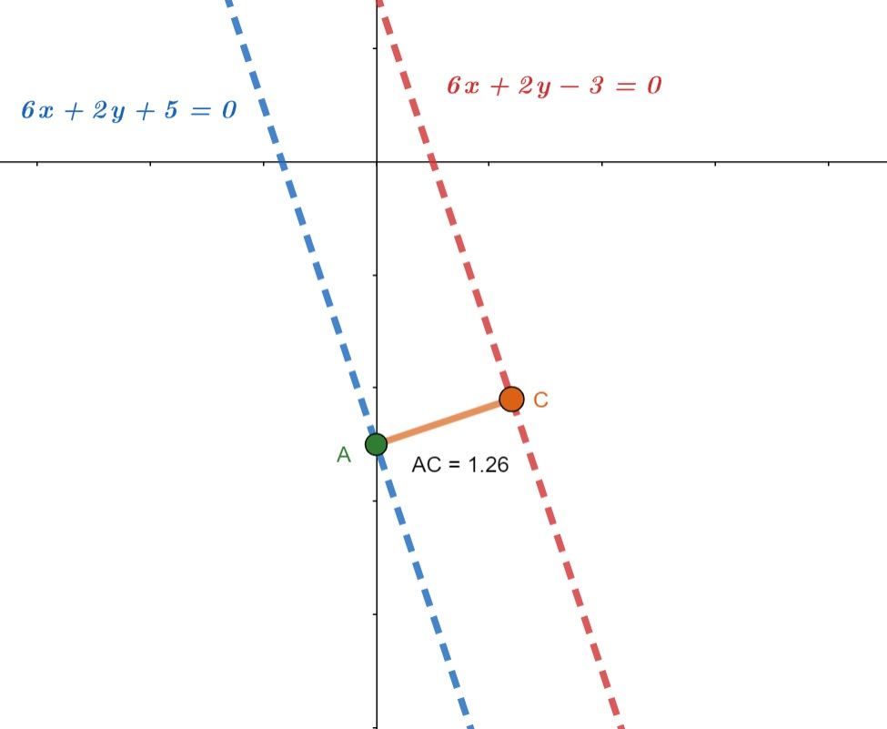

En los siguientes ejemplos se desea determinar la distancia que hay de un punto a una recta cualquiera de la forma $Ax +By + C =0$ en el plano cartesiano.
Apóyate con el siguiente video.
Distancia de una recta a un punto.
Determina la distancia del punto M(-2,-4) a la recta cuya ecuación es y realiza su gráfica.
Solución.
Para encontrar la distancia del punto M a la recta se debe de ocupar la fórmula:
$D= |\frac{Ax+By+C}{\sqrt{A^2 + B^2}}|$
de la recta $2x + 6y + 12 = 0$ tenemos que:
y el punto dado está en la coordenada (x,y) entonces: $x=-2$ ; $y=-4$
Sustituyendo los valores que se tienen del problema en la fórmula esto es:
$D = |\frac{Ax+By+C}{\sqrt{A^2 + B^2}}| \Longrightarrow |\frac{2(-2)+6(-4)+12}{\sqrt{(2)^2 + (6)^2}} | \Longrightarrow |\frac{-4-24+12}{\sqrt{4+36}}| \Longrightarrow |\frac{-16}{\sqrt{40}}| $
$D= |-2.53| $
El valor absoluto de -2.53 siempre es positivo por lo tanto:
La gráfica se presenta en la figura 2.

Figura 2.
Ejemplo 2
Encuentra la distancia entre las rectas $6x + 2y -3 = 0$ ; $6x + 2y + 5 = 0$
Solución:
Observamos que los coeficientes de “x” y de “y” son iguales en ambas ecuaciones; Entonces, las rectas tienen la misma pendiente $m=-3$ por la fórmula $m= - \frac{A}{B}$ y por lo tanto son paralelas.
Elegimos un punto cualquiera en la primera recta. para ello, tomamos cualquier valor de “x” por ejemplo x= 1 los sustituimos en la ecuación y encontramos el valor de “y” correspondiente:
$6(1)+2y-3=0$ de donde $y=-32$
Así, el punto $P(1,-\frac{3}{2})$ pertenece a la primera recta. Ahora calculamos la distancia de P a la segunda recta:
$D = |\frac{6(1)+2(-\frac{3}{2})+5}{\sqrt{6^2 + 2^2}}| = \frac{8}{\sqrt{40}} = 1.27 $
Por lo tanto, la distancia entre las rectas es de 1.27 Figura 3.
Para encontrar la distancia entre 2 rectas paralelas, tomamos un punto en una de ellas y encontramos la distancia de ahí a la otra recta.

Figura 3.
Te invitamos a realizar la siguiente actividad.